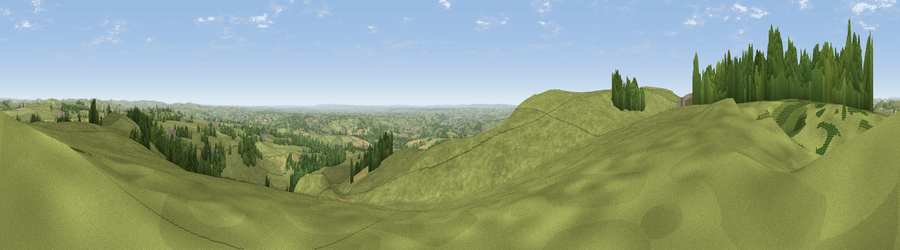

Viewpoint near Wootton
#8914 in England · top 5% of its area beats it · near Wootton · footpathWhere it is
The exact computed spot (SK 10575 46625). Click the marker for map links.
Public access: a public right of way passes within 18 m of this spot. Computed from Natural England's CRoW access layer and OpenStreetMap rights of way — not the legal definitive map. Always verify locally.
The view, rendered

A 360° render of this exact spot computed from the terrain model, tree cover and land cover — summer colours, afternoon light, calibrated against photographs of famous viewpoints. Real trees, hedges and buildings will differ in detail.
The panorama
Grey silhouette: terrain skyline in each direction (720 bearings, Earth curvature and refraction included). Dashed green: skyline with trees (+15 m) and buildings (+8 m) as obstacles. Blue strip: how far the ground is visible on each bearing.
Where the view opens
Wedge length = distance to the farthest visible ground on that bearing (vegetation-aware). Rings at 10, 25 and 50 km.
What fills the view
81% grassland · 13% woodland · 5% cropland ·
Angular shares of the visible panorama (visual magnitude), not map area. Landscape diversity 0.27 (0–1 Shannon).
Key numbers
More beautiful places nearby
The staircase of upgrades: each row has a higher view potential than everything closer. Driving times are estimates from straight-line distance, calibrated against real road routing — check an actual route before setting out.
| Place | Direction | Drive | Score |
|---|---|---|---|
| Viewpoint near Wootton | SSE · 1 km | ~2 min | 66.1 |
| Viewpoint near Wootton | SW · 1 km | ~2 min | 74.4 |
| Viewpoint near Wootton | W · 1 km | ~3 min | 74.8 |
| Tissington Hill | NE · 8 km | ~15 min | 75.5 |
| Viewpoint near Mow Cop | WNW · 27 km | ~43 min | 78.9 |
| Viewpoint near Mow Cop | WNW · 27 km | ~43 min | 80.2 |
| Viewpoint near Harthill | W · 60 km | ~82 min | 80.5 |
| Viewpoint near Little Wenlock | SW · 61 km | ~83 min | 84.2 |
53.01682, -1.84382 · source: screening · position refined by local search. Computed location — check access rights before visiting.